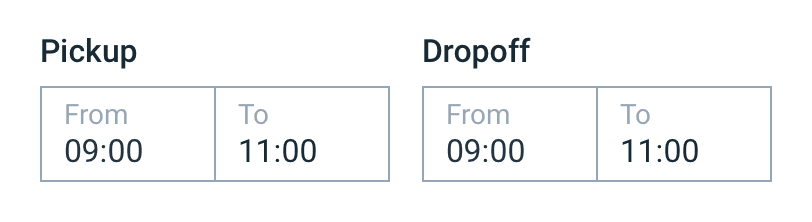
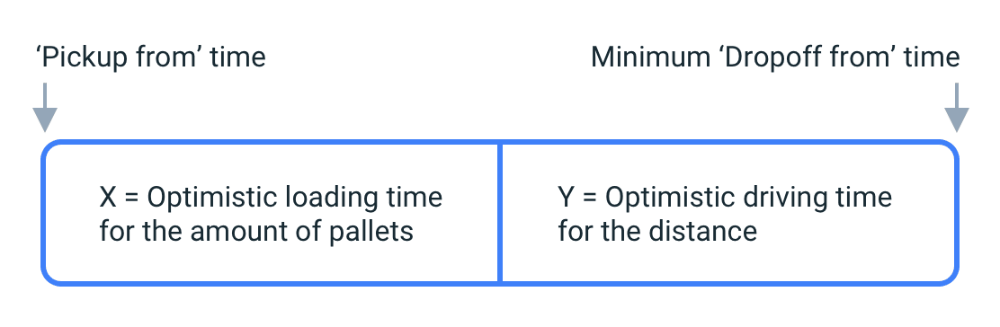
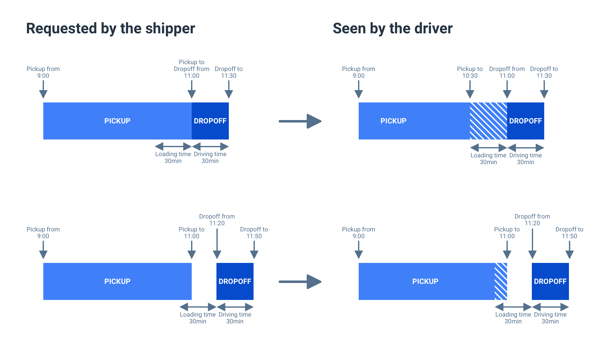

Case Study
Ontruck Case Study: Solving the Tricky Times Problem
Context
Ontruck is a service that allows companies with road freight shipping needs to easily book and track shipments online. We refer to these companies as shippers.
Shippers can book shipments with as many pickups and dropoffs as they need. When booking a shipment, we ask them to provide a time window for each stop. Time windows of zero minutes are allowed because pickup/dropoff points often provide shippers with specific appointment times.

When we originally designed the shipment booking flow, we decided to keep validation as simple as possible. These were the only validation rules that applied initially:
- 'Pickup to' can't be earlier than 'Pickup from'
- 'Dropoff to' can't be earlier than 'Dropoff from'
- 'Dropoff from' can't be earlier than 'Pickup from'
- 'Dropoff to' can't be earlier than 'Pickup to'
We knew we were taking risks by giving so much flexibility to shippers, but we preferred to launch a simple solution and learn from users' behavior rather than over-engineer a solution based on the assumption that shippers would provide problematic pickup/dropoff times.
Problem
Soon after we launched, our drivers started complaining that sometimes it was hard, or even impossible, to make it on time to all the stops in a job. We looked at data to verify this, and a significant percentage of shipments did indeed present issues with their pickup/dropoff times. These issues fell into two different categories:
- Impossible times: times that are virtually impossible to meet. For example, pickup in Toledo at 10 am and dropoff in Getafe at 10:30 am (driving time between Getafe and Toledo with no traffic is 45 min).
- Tricky times: times that are technically possible but tricky. For example, pickup in Toledo from 10 am to 3 pm, and dropoff in Getafe at 3 pm. If the pickup happens at 3 pm, the driver will be late to the dropoff for sure.
Initial approach
At Ontruck, problems are generally prioritized by Product Managers and solved by Product Designers. We didn't jump into solving these problems right away for different reasons. The impossible times problem had some obvious quick solutions, but it wasn't happening very often, which made sense, since most shippers knew pretty well what the driving times between locations were. The tricky times problem was happening more often, but solving the problem through our products or processes wasn't straightforward, so we decided not to tackle it for the time being.
Related problem
In the early days, our Fleet team manually reviewed all next-day shipments to anticipate and solve any potential problems. This included verifying addresses, checking if the driver had overlapping jobs, making sure the assigned vehicle was right for the cargo, and checking if pickup/dropoff times were doable. It is needless to say that this process didn't scale very well. The problem got bigger as the number of shipments we handled grew, so it was eventually prioritized by the Product Manager in my squad. I was in charge of finding a solution.
After doing some research to better understand why next-day jobs needed to be verified and the consequences of not doing it, it became clear that the problem could be tackled from two different angles: we could try to decrease the number of problematic shipments by doing things on the shippers' side (e.g., stricter form validation), or we could help our Fleet team focus on problematic shipments only.
No matter what we did on the shippers' side, we were going to keep receiving problematic shipments, so we decided to tackle the problem from the other end. I went to the product engineers in my squad to discuss the possibility of automatically identifying any of the problems that our Fleet team searched for every single day. I learned that we could automatically identify problems such as suspicious addresses, weird cargo characteristics, or even scan the special requirements field searching for specific words that we knew could mean trouble. This is when I saw an opportunity to tackle the tricky times problem, which was in our problems backlog.
After aligning all the stakeholders, I started designing an alert system that would allow our Fleet team to stop reviewing all next-day shipments and start focusing on potentially problematic shipments only.
We decided to ship a solution that alerted about four types of problems, with the idea of adding more types of problems in the future, so that our Fleet team could eventually rely 100% on the alert system. These are the actions that could be performed by our agents on the alerts:
- Monitor: This action was used to keep an eye on the shipment. An alert might require giving specific instructions to the driver, but our agents would have to wait until the shipment was assigned to a driver to do it. In those situations, they would choose to monitor the alert.
- Problem solved: Some of the problems would resolve automatically. For example, an impossible times problem would automatically resolve when the shipment times were modified. But there were other cases where we couldn't automatically detect if the problem had been solved, and therefore agents needed a way to resolve them manually.
- False alarm: We expected a certain number of false positives, especially from scanning the special requirements field looking for specific words that could mean trouble. This action allowed agents to dismiss the alert and let us know that a false positive had happened, so that we could iterate the system.
Back to the original problem
The alert system solution improved the productivity of our Fleet team. It also allowed us to react earlier to problematic shipments, including those with tricky times. Detecting impossible times required calculating driving times between stops, but tricky times followed a pattern that was easy to identify: the pickup-to and dropoff-to times were the same. When the alert system detected these cases, our agents were able to reach out to drivers in advance, asking them to plan their route to ensure they could make it on time to all the stops.
The impossible times problem was still unsolved, and although most tricky times cases were detected in time, reaching out to drivers every time was a lot of work for our Fleet team. That's why, a few months after the alert system had been deployed, the impossible and tricky times problem was prioritized by the Product Manager in my squad, and I set out to find a solution.
Solving the impossible times problem
Out of the two problems, this was the easy one, so I decided to tackle it first. As mentioned above, the only validation rule that affected the 'Dropoff from' input was this one: 'Dropoff from' can't be earlier than 'Pickup from'. This wasn't a problem if the time windows were big enough. For example, considering the driving time between Getafe and Toledo is around 45 min, these times were tricky but not impossible:
The problem was when the difference between the 'Pickup from' time and the 'Dropoff to' time was shorter than the driving time. For example:
We knew the average loading time for a shipment depending on the number of pallets. We also could calculate driving distances between two stops. With all that information, we introduced a new validation rule: Minimum 'Dropoff from' time = 'Pickup from' time + X + Y, where X is the optimistic loading time for the number of pallets in the shipment and Y is the optimistic driving time for the distance between the stops.
The reason why we used the optimistic driving times was because calculating driving times considering the expected traffic was technically expensive and was left out of scope.

Today, drivers only make it late to one stop when the times are tight and the loading time or the driving time takes longer than expected, but other than that, this solution solved the impossible times problem.
Solving the tricky times problem
After the solution for the impossible times problem was designed, I moved to the tricky times problem. I started by exploring the obvious solution, which was introducing new validation rules just like we had just done for the impossible times problem, but I soon realized that they would have a negative impact on the user experience. We couldn't set a minimum 'Dropoff to' time based on the 'Dropoff from' time because pickup/dropoff points often provided shippers with specific appointment times. That means that a dropoff window of zero minutes was perfectly valid.
The tricky times problem could only be detected after the user selected the 'Dropoff to' time, which is the last of the four times in the booking flow, and overriding times that the user had already typed didn't make any sense. Displaying a warning to the shipper when the problem was detected didn't sound like a good solution either, considering the times were actually doable.
But what if, instead of adding friction to the shippers, we could just translate tricky times into non-tricky times? I started exploring this avenue, which led me to the final solution. Tricky times would happen whenever the time between the 'Pickup to' and the 'Dropoff to' was shorter than the loading time plus the driving time between the stops. By communicating to the driver a different 'Pickup to' time than the one requested by the shipper, we could solve the problem. Both the pickup and the dropoff would happen within the time window requested by the shipper, but we would avoid running late to the dropoff.

To make this work, we also had to introduce some changes in the tool that our Fleet and Traffic teams use to monitor shipments. Since they had to communicate with both shippers and drivers, they needed to be able to visualize both the original times requested by the shipper and the times we shared with the drivers in the tricky times cases.
This solution improved the on-time rate for tricky times shipments by 7 points. That was a huge improvement, and we considered the problem solved. If at some point we can calculate driving times based on expected traffic, then we should be able to improve the on-time rate of tricky shipments even further.
This case study is a good example of how products are designed and built at Ontruck. It all starts with a problem-based roadmap instead of a feature-based one. From there, problem-solving rarely follows a linear path. We work in lean cycles, looking for ways to validate our hypotheses by investing as little time and effort as possible.